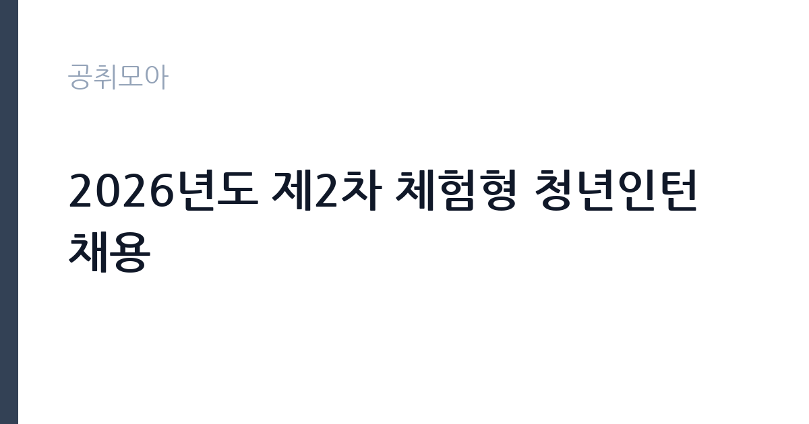

[공공기관] 2026년도 제2차 체험형 청년인턴 채용
한국전력공사 · 서울 · 마감 2026-11-05 (D-14) · 출처 잡알리오

한눈에 보는 모집 조건
| 기관 | 한국전력공사 |
|---|---|
| 공고명 | 2026년도 제2차 체험형 청년인턴 채용 |
| 고용형태 | 청년인턴(체험형) |
| 근무지 | 서울 |
| 게시일 | 2026-10-22 |
| 마감일 | 2026-11-05 (D-14) |
지원자격, 이렇게 읽으세요
- 공공기관 채용공시
- 세부 조건은 원문 공고문 확인
체험형 인턴은 취업 준비생에게 직무 경험을 제공하는 단기 채용입니다. 근무 기간이 3개월에서 6개월로 정해져 있고 인턴료가 지급됩니다. 기관에 따라 수료증 발급이나 채용 시 가점 같은 혜택이 붙습니다. 이번 공고는 한국전력공사에서 직접 진행하는 자체 전형으로, 응시자격과 제출서류는 공고문에 항목별로 제시됩니다. 체험형 인턴은 청년, 장애인, 자립준비청년 같은 대상별 전형으로 나뉘는 경우가 많습니다. 본인이 어느 전형에 해당하는지 먼저 확인해야 하며 증빙 서류가 필수입니다. 재학생과 졸업생 지원 가능 여부, 연령 기준, 타 인턴 경험 제한 조항이 자주 붙습니다. 일부 기관은 인턴 근무 경력이 있으면 재지원을 제한합니다. 근무 기간과 인턴료, 수료 요건을 공고문에서 확인하십시오. 서류는 접수 마감 이후 보완이 되지 않으므로 자격 요건과 증빙 서류를 마감 전에 모두 갖춰야 합니다. 공고문에 명시된 우대 사항은 해당 여부를 확인해 증빙을 첨부해야 가점이 반영됩니다. 자격증은 유효 기간과 등록 상태를 확인해야 합니다. 갱신이 필요한 자격이라면 갱신 여부를 먼저 점검하십시오.
이 공고의 포인트
이 공고의 첫 번째 포인트는 고용 형태입니다. 짧은 기간이지만 직무 경험과 수료 실적을 쌓을 수 있고, 기관에 따라 채용 시 가점이 붙습니다. 두 번째는 업무 범위가 명확하다는 점입니다. 체험형 인턴 직무로 채용되므로 배치 이후 담당 업무가 크게 흔들리지 않습니다. 세 번째는 근무지입니다. 서울 지역 근무로 접근성은 좋지만 그만큼 지원자가 몰리는 지역이므로 경쟁률을 넉넉히 잡아야 합니다. 직무 특성이 분명해 본인의 경험과 맞는지 빠르게 판단할 수 있습니다. 같은 직무 공고 중에서는 접수 마감이 가장 빨라 일정을 앞당겨 잡아야 합니다. 선발 인원은 공고문에 명시되어 있으니 모집분야 항목을 함께 확인하십시오.
전형은 어떻게 진행되나
1차 서류, 2차 면접의 2단계로 진행되는 구성이 일반적입니다. 서류에서는 자격 요건과 경력 증빙을 확인하고, 면접에서는 실제 업무 수행 능력과 조직 적응을 봅니다. 직무에 따라 필기시험이나 실기, 컴퓨터 활용 시험이 추가되기도 하므로 공고문의 전형표를 먼저 확인하십시오. 단계별로 합격자만 다음 전형에 응시할 수 있고, 단계마다 응시 자격 확인 서류를 다시 제출해야 하는 경우가 있습니다. 최종합격자 발표 후에는 신원조회와 채용 신체검사가 남아 있습니다. 서류 단계에서 요건을 충족하지 못하면 이후 전형을 준비할 기회가 없으므로, 제출 전 요건 대조를 한 번 더 하는 것이 좋습니다.
원문에서 확인한 전형 방식
○ 일반 : 학력, 연령 제한 없음 ○ 고졸 : 최종학력이 ‘고등학교 졸업’인 자(전문대, 대학 재학 중인 경우 지원 가능하나, 졸업예정자는 지원 불가), 연령제한 없음 ○ 사회형평(자립준비청년, 북한이탈주민) : 학력, 연령 제한 없음 / 해당 증명서 발급이 가능한 자 ○ 병역법 제76조에서 정한 병역의무 불이행 사실이 없는 자 ○ 인턴 근무시작일부터 근무 가능한 자 ※ 기타 자세한 사항은 첨부파일의 공고문 참조
이런 분께 추천해요
- 해당 전형의 지원 자격을 충족하는 분
- 짧은 기간에도 배우고 기여하려는 태도가 있는 분
- 기관 업무에 관심을 갖고 사전 조사를 해온 분
지원 전 체크리스트
- 응시자격 요건과 경력 기준을 충족하는가 — 경력은 증명서로 입증해야 합니다
- 인턴 기간과 수료 요건, 지원 자격 전형을 확인했는가
- 제출서류 목록을 모두 준비했는가 — 누락 시 서류 단계에서 탈락합니다
- 접수 마감 2026-11-05 이전에 접수 방식을 확인해 제출했는가
모집 일정과 제출 타이밍
접수 마감은 2026-11-05이고 공고는 2026-10-22에 게시되었습니다. 준비 기간 14일 안에 서류 작성, 증빙 발급, 접수를 모두 마쳐야 하므로 주말을 포함해 일정을 미리 나누는 것이 좋습니다. 특히 경력 기술서나 직무수행계획서를 요구하는 공고는 작성에 시간이 걸리므로 첫날 초안을 잡으십시오. 서류 합격자 발표와 면접 사이 간격이 짧은 경우가 많아 면접 예상 질문은 서류 제출 전에 정리해 두는 편이 유리합니다. 마감 직전에는 접속이 몰리므로 여유를 두고 제출하십시오. 임용 예정일이 빠르게 잡히는 공고이므로 현재 일정과 겹치지 않는지 미리 확인하십시오. 서울 근무지는 대중교통 접근성이 좋은 대신 주차와 통근 시간이 변수입니다. 출퇴근 경로를 미리 확인하십시오. 마감까지 2주 안팎이 있어 준비할 시간은 있지만 미루면 촉박해집니다. 선발 인원은 공고문의 모집분야 항목에 직종별로 제시되어 있습니다.
직무 이해하기: 공공기관
발전 설비 운영 기관은 발전소의 정비와 운전, 안전 관리를 담당합니다. 정비 인력과 지원 인력이 함께 근무하며 원자력 본부는 안전 규정과 보안 절차가 매우 엄격합니다. 교대 근무와 현장 대기가 업무의 일부입니다. 체험형 인턴은 정해진 기간 동안 실제 부서에 배치되어 업무를 보조하며 직무를 경험하는 자리입니다. 부서에 따라 문서 작성과 자료 정리, 데이터 입력, 행사 지원, 현장 업무 보조 등을 맡습니다. 인턴 기간 중에는 직무 교육과 멘토링이 제공되는 경우가 많고 결과 보고서를 제출해야 하는 프로그램도 있습니다. 근무 기간은 3개월에서 6개월이 일반적이며, 기관에 따라 채용 연계나 서류 가점 같은 혜택이 붙습니다. 업무는 혼자 처리하기보다 부서 단위로 나눠 진행되므로 담당 구역과 협업 범위를 입사 초에 확인하는 것이 중요합니다. 직무 교육은 입사 후 기관 자체 계획에 따라 진행되므로 사전 경험이 없어도 시작할 수 있습니다.
자기소개서 작성 팁
인턴 지원서는 성장 가능성과 실행력을 보여주는 것이 핵심입니다. 부족한 경력을 감추기보다 배운 것을 빠르게 적용한 사례를 쓰십시오. 지원 기관의 사업을 조사해 구체적인 업무 아이디어를 제시하면 준비도가 드러납니다. 인턴 이후 어떤 직무로 성장하고 싶은지 방향을 밝히면 좋습니다. 직무 경험이 많지 않다면 경험의 양보다 과정을 구체적으로 쓰는 편이 낫습니다. 어떤 상황에서 무엇을 판단했고 어떤 결과가 나왔는지 순서대로 서술하면 신뢰가 생깁니다. 지원 동기와 기여 방안은 한 문단씩 짧게 유지하고, 가장 자신 있는 경험에 분량을 몰아주십시오. 마지막 문장은 포부보다 구체적인 실행 계획으로 끝내는 것이 좋습니다.
면접 준비 포인트
면접에서는 지원 동기와 배우려는 태도를 봅니다. 인턴 기간에 무엇을 얻고 싶은지 구체적으로 말할 수 있어야 하고, 학교나 아르바이트에서 맡았던 역할을 근거로 제시하면 좋습니다. 특정 업무만 하려는 인상을 주면 감점입니다. 기간이 짧다는 점을 인정하고 그 안에 무엇을 해낼 수 있는지 계획으로 답하십시오. 답변은 상황, 판단, 조치의 순서로 정리하면 전달이 분명해집니다. 모르는 질문에는 모른다고 밝히고 확인 방법을 제시하는 편이 억지 답변보다 낫습니다. 마지막에는 근무 의사와 함께 2026-11-05 이후 일정에 언제든 응할 수 있다는 점을 전달하십시오. 지원 기관의 최근 사업이나 조직 개편 내용을 확인해 두면 지원 동기 질문에서 차이가 납니다.
급여·근무조건 읽는 법
체험형 인턴의 보수는 기관이 정한 인턴료 기준을 따르며 월급 또는 일급 형태로 지급됩니다. 2026년 최저임금은 시급 10,320원, 월 환산 2,156,880원(209시간 기준)이므로 이보다 낮은 조건은 적용될 수 없습니다. 인턴료에 식대나 교통비가 포함되는지 별도로 지급되는지 확인해야 합니다. 4대 보험 가입 여부와 근무 기간도 함께 확인하십시오. 구체적인 금액은 공고문에서 확인할 수 있습니다. 2026년 적용 최저임금은 시급 10,320원, 월 환산 2,156,880원(주 40시간·209시간 기준)입니다. 고용노동부 고시 제2025-47호로 확정된 금액입니다. 보수는 보통 기본급, 각종 수당, 상여로 나뉘어 지급됩니다. 기본급만 보면 적어 보여도 정액급식비와 명절휴가비, 복지포인트가 붙으면 실제 총액이 달라지므로 항목별로 확인해야 합니다. 4대 보험과 퇴직급여 적용 여부도 함께 보십시오. 기간제는 계약 기간이 짧아 월 급여가 높아도 연간 총액은 적을 수 있습니다.
자주 묻는 질문
- 선발 인원은 몇 명인가요?
공고문의 모집분야 항목에 직종별 인원이 표로 제시되어 있습니다. 첨부된 공고문 원문에서 확인하십시오. - 근무지는 어디인가요?
서울 지역의 한국전력공사 소속 근무지입니다. 세부 주소와 출퇴근 조건은 원문 공고문에서 확인할 수 있습니다. - 보수는 얼마인가요?
채용 신분(체험형 인턴)과 기관 임금 규정에 따라 정해지며 구체적인 금액은 공고문 처우 항목에 제시됩니다. 금액이 공개되지 않은 경우에는 원문의 보수표를 확인하십시오.
함께 보면 좋은 공고
[공공기관] 계약직(보건직,행정직,연구직,시설직) 공개채용 모집 공고 — 마감 2026-11-06[공공기관] (거창적십자병원) 초단시간 근로자 보건직 물리치료사 1차 채용 — 마감 2026-11-08[공공기관] [제2026-121호] 2026년도 제5차 전남광주통합특별시광주장애아동·발달장애인지원센터 (장애아동지원팀)체험형 청년인턴(장애인 제한경쟁) 채용 공고 — 마감 2026-11-06출처: 잡알리오 공개정보를 바탕으로 공취모아가 정리한 안내글입니다. 모집 조건·일정은 변경될 수 있으니 지원 전 반드시 원문 공고문을 확인하세요. 본 글은 정보 제공용이며 합격을 보장하지 않습니다.